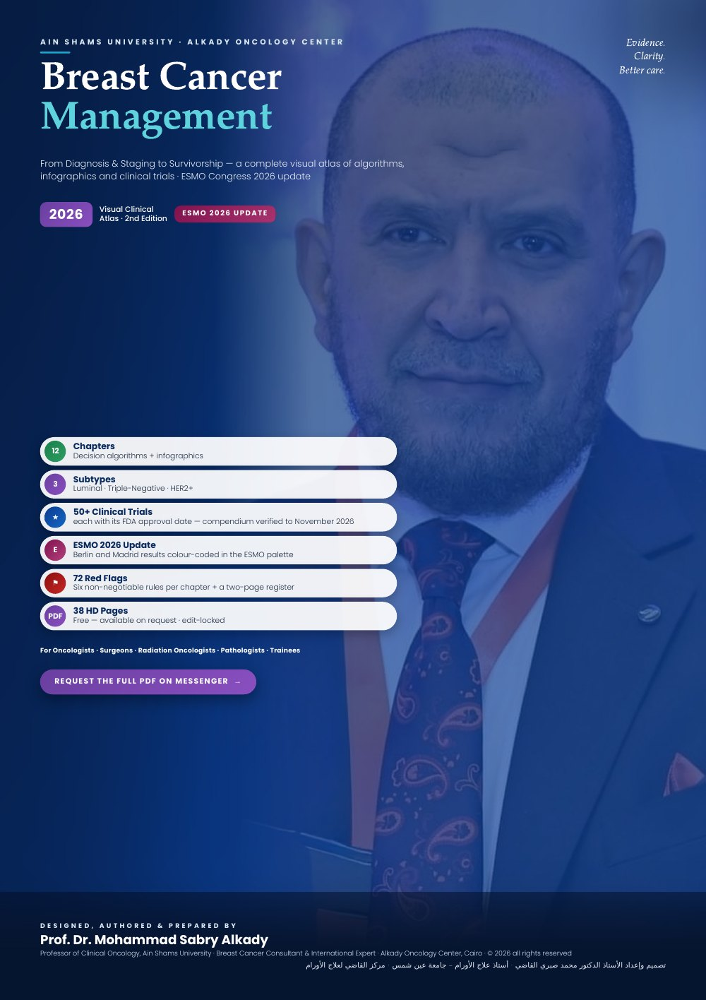
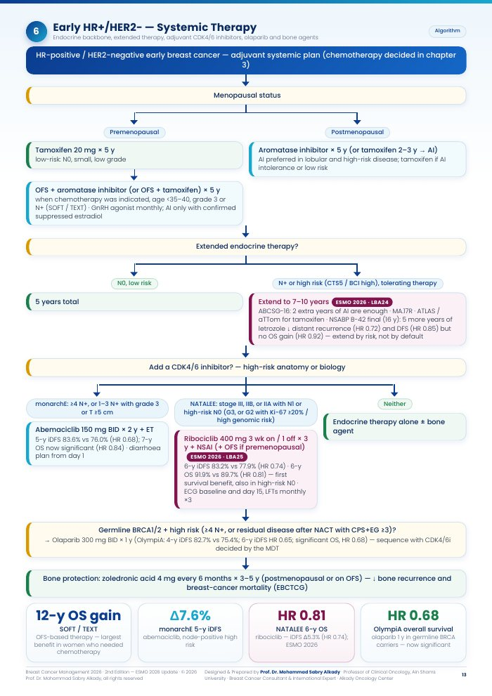
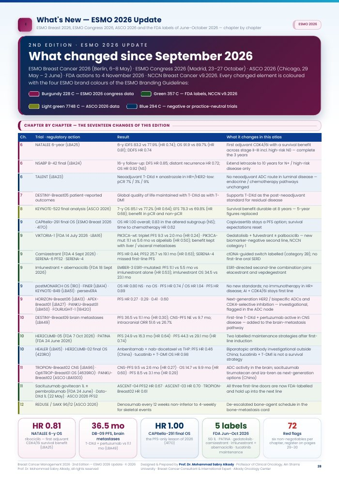
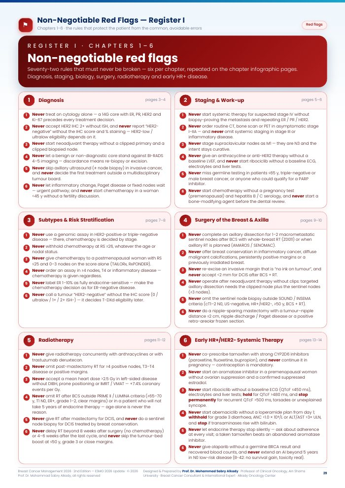
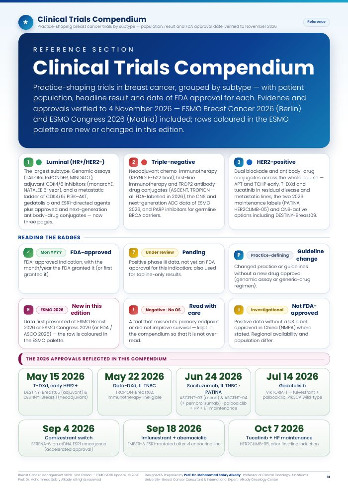

Breast oncology
Breast Cancer Management 2026
From Diagnosis & Staging to Survivorship
2nd editionESMO 2026 update- ESMO 2026ESMO Breast (Berlin) and ESMO Congress (Madrid) data that changed a node, number or row
- FDA · NCCNFDA labels of June to October 2026 and NCCN v9.2026 categories
- ASCO 2026Other 2026 data carried in, such as the KEYNOTE-522 final analysis
- Negative · neutralTrials that missed the endpoint or left practice unchanged
Inside
- 12chapters, each a decision algorithm plus an infographic
- 17changes of the ESMO 2026 update, chapter by chapter
- 50+trials in a compendium, by subtype, with FDA approval dates
- 72non-negotiable red flags, six per chapter
A look inside



